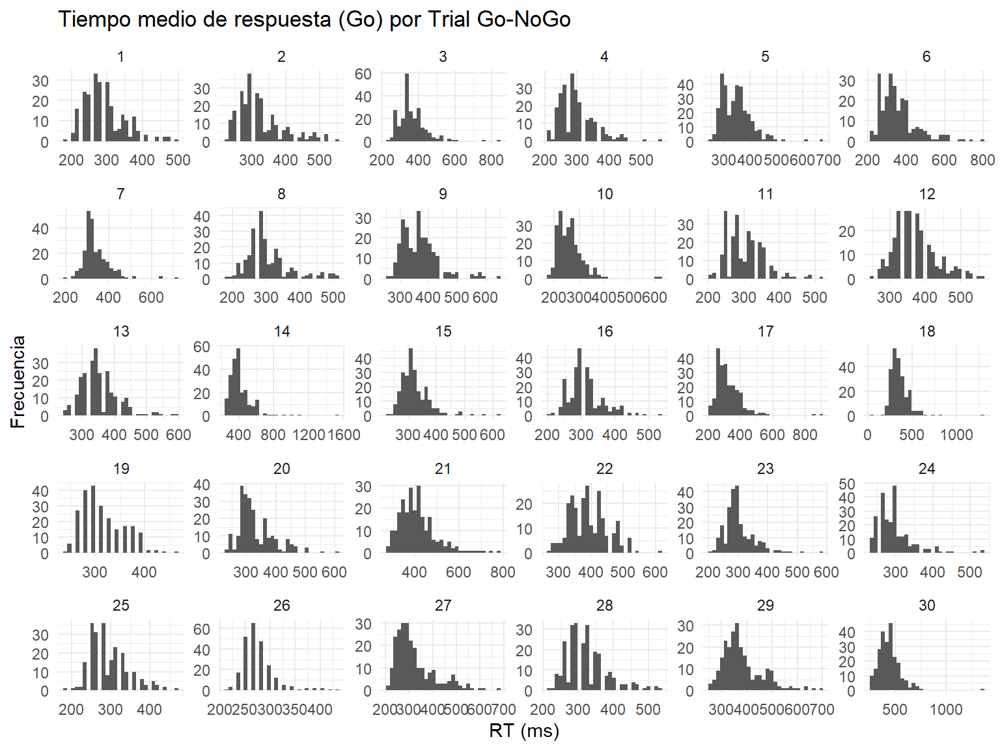

data <- data %>%group_by(SU) %>%arrange(X, .by_group =TRUE) %>%# Ordena por latencia ascendente dentro de cada sujetomutate(trial_num =row_number()) %>% ungroup %>%mutate(est_label =ifelse(est ==1, "Go", "No Go")) %>%mutate(resp_label =ifelse(resp ==-99, "No Respuesta", "Respuesta"))ggplot(data, aes(x = trial_num, fill = est_label, color = est_label)) +geom_histogram(position ="identity", alpha =0.1, bins =400) +scale_fill_manual(values =c("Go"="green", "No Go"="red")) +scale_color_manual(values =c("Go"="green", "No Go"="red")) +labs(title ="Aparición de Go y No Go en la secuencia de ensayos",x ="Posición del ensayo (trial_num)",y ="Frecuencia",fill ="Tipo de ensayo",color ="Tipo de ensayo" ) +theme_minimal()
Código
# 1) contar y completar combinaciones que faltendata_area <- data %>%count(trial_num, est_label, resp_label) %>%# cuenta n por combinacióncomplete(trial_num, est_label, resp_label, fill =list(n=0)) %>%# mete los que falten con n=0group_by(trial_num, est_label) %>%mutate(prop = n /sum(n)) %>%# calcula proporciónungroup() %>%mutate(trial_num =as.integer(trial_num)) # fuerza tipo numérico# 2) dibujar el área apiladaggplot(data_area, aes(x = trial_num,y = prop,fill = resp_label,group = resp_label)) +# agrupa por categoríageom_area(position ="stack", alpha =0.7) +# apilado explícitofacet_wrap(~ est_label) +scale_y_continuous(labels =percent_format(accuracy =1)) +scale_fill_brewer(palette ="Set1") +labs(title ="Proporción de respuestas por número de ensayo y tipo (área)",x ="Número de ensayo",y ="Proporción",fill ="Tipo de respuesta" ) +theme_minimal()
Código
ggplot(data %>%filter(est_label =="Go"& rt >0),aes(x =as.integer(trial_num), y = rt)) +stat_summary(fun = mean, geom ="line", size =0.1) +stat_summary(fun.data = mean_cl_normal,geom ="ribbon", alpha =0.2) +labs(title ="Tiempo medio de respuesta (Go) por ensayo",x ="Número de ensayo",y ="RT medio (ms)" ) +theme_minimal()
3 Trial Go-NoGo
Código
data <- data %>%group_by(SU) %>%group_by(SU) %>%arrange(trial_num) %>%mutate(new_trial =1+cumsum(lag(est_label =="No Go",default =FALSE) ) ) %>%ungroup() %>%group_by(SU, new_trial) %>%mutate(new_trial_num =row_number() ) ggplot(data %>%filter(est_label =="Go"& rt >0),aes(x =as.integer(new_trial_num), y = rt)) +geom_line(aes(group =interaction(SU,new_trial)), alpha =0.1) +labs(title ="Tiempo medio de respuesta (Go) por Trial Go-NoGo",x ="Número de ensayo por sujeto (Trial Go-NoGo)",y ="RT medio (ms)" ) +theme_minimal() +facet_wrap(~ SU, scale="free_y")
Código
ggplot(data %>%filter(est_label =="Go"& rt >0),aes(x =as.integer(new_trial_num), y = rt)) +geom_line(aes(group =interaction(SU,new_trial)), alpha =0.1) +geom_smooth(aes(group = SU),method ="lm", se =FALSE, color ="blue", alpha =0.5) +labs(title ="Tiempo medio de respuesta (Go) por Trial Go-NoGo",x ="Número de ensayo por sujeto (Trial Go-NoGo)",y ="RT medio (ms)" ) +theme_minimal() +facet_wrap(~ SU, scale="free_y")
ggplot( data %>%filter(est_label =="Go"& rt >0),aes(x = rt)) +geom_histogram() +labs(title ="Tiempo medio de respuesta (Go) por Trial Go-NoGo",x ="RT (ms)",y ="Frecuencia" ) +theme_minimal() +facet_wrap(~ SU, scales ="free")

Código
ggplot2::ggplot( data %>%filter(est_label =="Go"& rt >0) %>%filter(!is.na(rt) &!is.na(trial_num)), ggplot2::aes(x = trial_num, y = rt)) + ggplot2::geom_point(alpha =0.4, size =1) + ggplot2::labs(title ="RT vs Trial Number por Sujeto",x ="Número de Trial",y ="Tiempo de respuesta (ms)" ) + ggplot2::theme_minimal() + ggplot2::facet_wrap(~ SU, scales ="free_y")
Código
ggplot2::ggplot( data %>%filter(est_label =="Go"& rt >0) %>%filter(!is.na(rt) &!is.na(trial_num)), ggplot2::aes(x = trial_num, y = rt)) + ggplot2::geom_point(alpha =0.4, size =1) + ggplot2::geom_smooth(method ="lm", se =FALSE, color ="blue") + ggplot2::labs(title ="RT vs Trial Number por Sujeto",x ="Número de Trial",y ="Tiempo de respuesta (ms)" ) + ggplot2::theme_minimal() + ggplot2::facet_wrap(~ SU, scales ="free_y")
4 Estimación del Aprendizaje de la Probabilidad de Go en una Tarea Go/No-Go
4.1 Objetivo
Estimar cómo los sujetos aprenden la probabilidad de aparición del estímulo Go (P(Go)) en una tarea Go/No-Go, utilizando como variable de interés el tiempo de respuesta (RT) a los estímulos Go.
4.2 1. Codificación de Estímulos y Respuestas
🟢 Go → Acción esperada: Apretar
🔴 NoGo → Acción esperada: Esperar
4.3 2. Hipótesis del Modelo
Se postula que los sujetos ajustan sus expectativas sobre la probabilidad de aparición del estímulo Go a lo largo del tiempo. Esto se refleja conductualmente en los RT:
Si P(Go) ↑ → RT ↓
Si P(Go) ↓ → RT ↑
4.4 3. Modelo de Aprendizaje por Predicción de Error
Los sujetos actualizan una estimación interna de la probabilidad Q_t de que aparezca un estímulo Go usando una regla tipo Rescorla-Wagner:
\[
\text{RPE}_t = R_t - Q_t
\]
\[
Q_{t+1} = Q_t + \alpha \cdot \text{RPE}_t
\]
Donde:
\(R_t\): recompensa observada (1 si Go, 0 si NoGo)
\(Q_t\): probabilidad esperada de Go
\(\alpha\): tasa de aprendizaje (puede decrecer con el tiempo o mantenerse constante)
4.5 4. Política de Elección: Función Softmax
Se modela la probabilidad de emitir una respuesta con una política tipo softmax, que transforma los valores \(Q\) en probabilidades de acción: